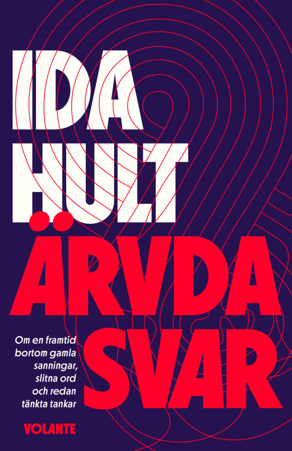

-

Ida Hult – Ärvda svar
ISBN: 9789179651107
-
Klas Hallberg & Per Kristensson – I kundens skor
ISBN: 9789189043244
-
Klas Hallberg – YCDBRALAI
Föreläsnings- och koncepttitel (ingen ISBN-registrerad bokutgåva)
-
Sunt Arbetsliv –
Vad ska bort? Så slutar ni göra onödiga saker
-
Öppna Skolplattformen –
GitHub - Kolplattformen
-
IT-säkerhetspodden –
Avsnitt 125 - Öppna Skolplattformen
-
YouTube –
Relaterad video
-
Funktionell dumhet.
Ett begrepp från boken Funktionell dumhet av Mats Alvesson och André Spicer.
Beskriver hur vi människor och organisationer fastnar i att göra saker utan att ifrågasätta varför.